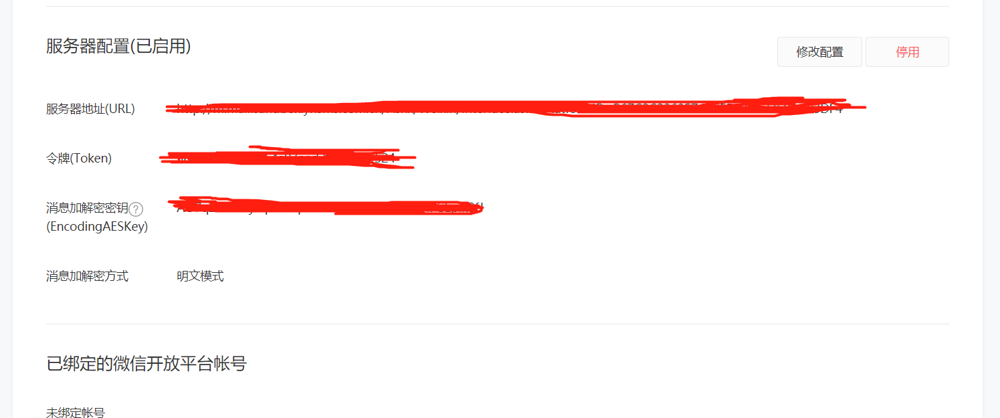
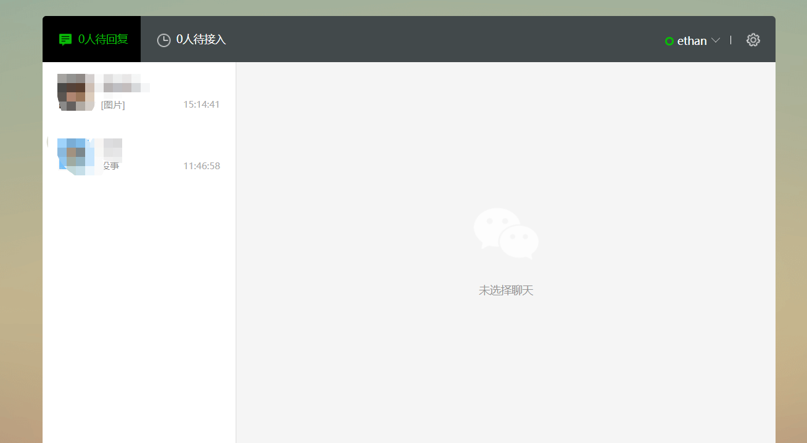
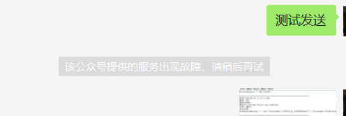
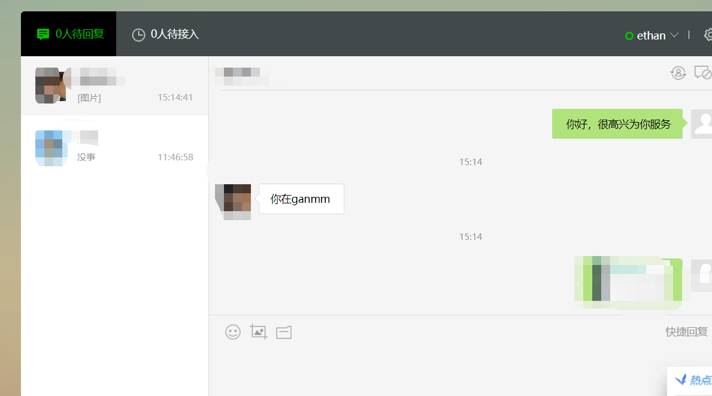

当用户和公众号产生特定动作的交互时（具体动作列表请见下方说明），微信将会把消息数据推送给开发者，开发者可以在一段时间内（目前修改为48小时）调用客服接口，通过POST一个JSON数据包来发送消息给普通用户。此接口主要用于客服等有人工消息处理环节的功能，方便开发者为用户提供更加优质的服务。
目前允许的动作列表如下（公众平台会根据运营情况更新该列表，不同动作触发后，允许的客服接口下发消息条数不同，下发条数达到上限后，会遇到错误返回码，具体请见返回码说明页）：
1、用户发送信息
2、点击自定义菜单（仅有点击推事件、扫码推事件、扫码推事件且弹出“消息接收中”提示框这3种菜单类型是会触发客服接口的）
3、关注公众号
4、扫描二维码
5、支付成功
6、用户维权
为了帮助公众号使用不同的客服身份服务不同的用户群体，客服接口进行了升级，开发者可以管理客服账号，并设置客服账号的头像和昵称。该能力针对所有拥有客服接口权限的公众号开放。
开通客服功能后,用户向公众号发送消息时,微信将会把消息数据推送给开发者,这里可以在配置接收的uri地址接口里面拿到消息

在这里拿到消息后,我们需要将某部分消息转发到微信客服系统中

设置消息转发文档地址
根据文档,将相应消息设置为如下
string res = @"<xml>
<ToUserName><![CDATA[{0}]]></ToUserName>
<FromUserName><![CDATA[{1}]]></FromUserName>
<CreateTime>{2}</CreateTime>
<MsgType><![CDATA[transfer_customer_service]]></MsgType>
</xml>";
return res;只需要替换里面的ToUserName FromUserName CreateTime即可,这里要注意不能有空格和换行,否则消息转发不成功

/// <summary>
/// 添加客服账号
/// </summary>
/// <param name="kf_account"></param>
/// <param name="nickname"></param>
/// <returns></returns>
public string AddInviteworker(string kf_account, string nickname)
{
string token = GetWxToken();
string url = "https://api.weixin.qq.com/customservice/kfaccount/add?access_token=" + token;
using (WebClient webClient = new WebClient())
{
webClient.Encoding = Encoding.UTF8;
webClient.Headers.Add("Content-Type", "application/x-www-form-urlencoded");
string sResponse = webClient.UploadString(url, "POST", JsonConvert.SerializeObject(new
{
kf_account,
nickname
}));
var res1 = JsonConvert.DeserializeObject<dynamic>(sResponse);
LogHelper.Error(res1);
return sResponse;
}
}
/// <summary>
/// 邀请绑定客服帐号
/// </summary>
/// <param name="kf_account">完整客服帐号，格式为：帐号前缀@公众号微信号</param>
/// <param name="invite_wx">接收绑定邀请的客服微信号</param>
/// <returns></returns>
public string BindInviteworker(string kf_account,string invite_wx) {
string token = GetWxToken();
string url = "https://api.weixin.qq.com/customservice/kfaccount/inviteworker?access_token=" + token;
using (WebClient webClient = new WebClient())
{
webClient.Encoding = Encoding.UTF8;
webClient.Headers.Add("Content-Type", "application/x-www-form-urlencoded");
string sResponse = webClient.UploadString(url, "POST", JsonConvert.SerializeObject(new {
kf_account,
invite_wx
})) ;
var res1 = JsonConvert.DeserializeObject<dynamic>(sResponse);
Console.WriteLine(sResponse);
return sResponse;
}
}
/// <summary>
/// 发送客户消息
/// </summary>
/// <param name="touser"></param>
/// <param name="content"></param>
/// <returns></returns>
public string SendMsgWechat(string touser,string content) {
string token = GetWxToken();
string url = "https://api.weixin.qq.com/cgi-bin/message/custom/send?access_token="+ token;
using (WebClient webClient = new WebClient())
{
webClient.Encoding = Encoding.UTF8;
webClient.Headers.Add("Content-Type", "application/x-www-form-urlencoded");
string sResponse = webClient.UploadString(url, "POST", JsonConvert.SerializeObject(new {
touser,
msgtype= "text",
text = new {
content= content
}
}));
var res1 = JsonConvert.DeserializeObject<dynamic>(sResponse);
LogHelper.Error(res1);
return sResponse;
}
}
直接在微信客服网页版发送消息
